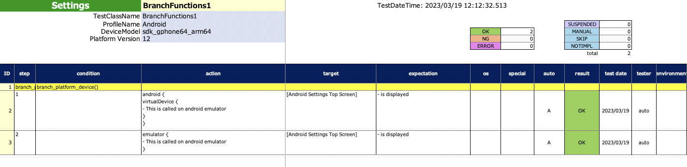
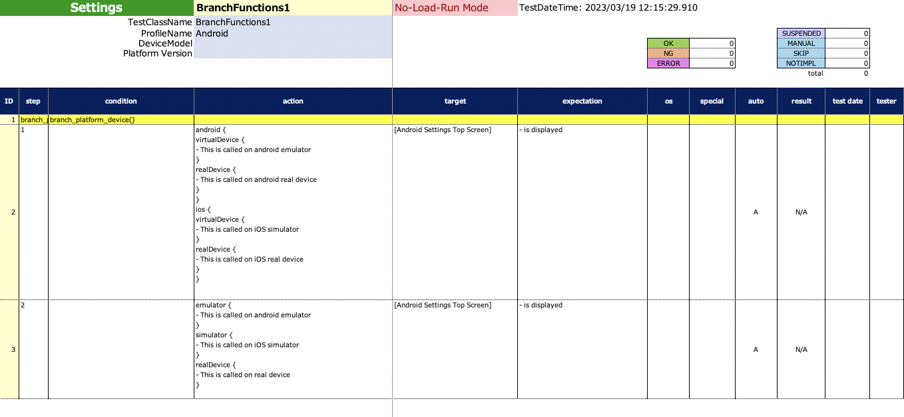

Platform function
Conditional branches are required on specific test situation. You can use platform functions.
functions
| function | description |
|---|---|
| android | The code block is executed on android |
| ios | The code block is executed on iOS |
| emulator | The code block is executed on Android emulator |
| simulator | The code block is executed on iOS simulator |
| virtualDevice | The code block is executed on virtual device |
| realDevice | The code block is executed on real device |
Example
BranchFunctions1.kt
(kotlin/tutorial/basic/BranchFunctions1.kt)
package tutorial.basic
import org.junit.jupiter.api.Order
import org.junit.jupiter.api.Test
import shirates.core.configuration.Testrun
import shirates.core.driver.branchextension.*
import shirates.core.driver.commandextension.describe
import shirates.core.driver.commandextension.screenIs
import shirates.core.testcode.UITest
@Testrun("testConfig/android/androidSettings/testrun.properties", profile = "Android")
class BranchFunctions1 : UITest() {
@Test
@Order(10)
fun branch_platform_device() {
scenario {
case(1) {
action {
android {
virtualDevice {
describe("This is called on android emulator")
}
realDevice {
describe("This is called on android real device")
}
}
ios {
virtualDevice {
describe("This is called on iOS simulator")
}
realDevice {
describe("This is called on iOS real device")
}
}
}.expectation {
it.screenIs("[Android Settings Top Screen]")
}
}
case(2) {
action {
emulator {
describe("This is called on android emulator")
}
simulator {
describe("This is called on iOS simulator")
}
realDevice {
describe("This is called on real device")
}
}.expectation {
it.screenIs("[Android Settings Top Screen]")
}
}
}
}
}
Spec-Report(Normal mode)

Spec-Report(No-Load-Run mode)
